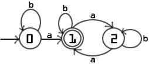
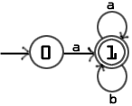
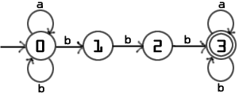
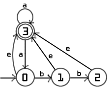

| digitalOverflow101010 |
1. C-7.14 p. 297
Here is our implementation of this algorithm:public static int findPrime(int m) { if (m<1) return 0; boolean primes[] = new boolean[2*m + 1]; for (int i=0;i<=2*m;i++) { primes[i] = true; } primes[0] = false; primes[1] = false; int nextPrime = 2; while (nextPrime<Math.sqrt(2*m)) { int primeMultiples = nextPrime * 2; while (primeMultiples<=2*m) { primes[primeMultiples] = false; primeMultiples += nextPrime; } nextPrime++; while (nextPrime<Math.sqrt(2*m) && primes[nextPrime]==false) nextPrime++; } for (int i=m;i<=2*m;i++) if (primes[i]==true) return i; //this actually can't happen (by Bertrand's Postulate) //but don't tell the Java compiler return 0; }The space complexity of this algorithm is dominated by the boolean array used in the sieve algorithm process. This array is of size 2m + 1. A handful of local variables consume a constant amount of space, let's call this k. In addition there is also the overhead for a function call, let's call this o. Then:
2m + 1 + k + o <= 2m + 1m + km + om = (3 + k + o)m for m >= 1. Therefore the space complexity of this algorithm is O(m). (def. of Big O with c = 3 + k + o and n0=1.)The time complexity of this algorithm can best be obtained by studying the three major loops that it contains. While there are statements outside of these loops, all statements outside of these loops are of O(1) time complexity.The first loop is the for loop that initializes all locations in the array to true making them candidates to be prime numbers. It iterates from 0 to 2m iterating 2m + 1 times:
2m + 1 <= 2m + 1m = 3m for m > = 1. Therefore this loop has time complexity O(m). (def. of Big O with c = 3 and n0=1.)The next loop entered is the major loop of the program doing the majority of the work. This is where you can see the seive algorithm in action. It starts with the prime number 2 and marks every multiple of 2 false. Then it goes on to the next prime, 3, and does the same thing. It continues until it has done this with all primes <= the square root of 2m. Let p be the number of primes <= the square root of 2m and let h be the highest prime of those <= 2m, then, the number of iterations to mark the multiples false is:
2m/2 + 2m/3 + 2m/5 + 2m/7 + 2m/11 + ... + 2m/h <= m + m + m + m + m + ... + m = pm <= sqrt(2m)*m = sqrt(2)*sqrt(m)*m for m >=1. Therefore this loop is O(sqrt(m)*m) = O(m^(3/2)) for m>=1. (def. of Big O with c = sqrt(2) and n0=1.) (Note the substitution of sqrt(2m) for p, the number of primes <= the square root of 2m.)Finally, the algorithm enters the last loop. It starts at m and iterates until it finds an array location still marked true, which means that it is prime. This prime is guarenteed to exist by Bertrand's Postulate and therefore the maximum number of checks needed to find this prime is 2m - m + 1 = m + 1:
m + 1 <= m + m = 2m for m>=1. Therefore, this phase is O(m). (def. of Big O with c = 2 and n0=1.)The O(1) components of the algorithm together with the two O(m) loops and the O(m^(3/2)) loop make for an overall time complexity that is O(m^(3/2)).(Please note that our proof relies on the upper bound subsititution of the square root of 2m for the number of primes <= the square root of 2m. A more precise, and certainly more mathematically rigorous proof can be made with a tighter approximation of this value which we have found to be approximated as x/(log(x) - 1) at http://www.utm.edu/research/primes/howmany.shtml.)
2. C-9.4 p. 391
Unweighted Trees1. The algorithm:
Algorithm ComputeCenters(T) Input: A tree T Output: a Sequence containing the center or centers of the tree T make a copy of T called U create a sequence S use an inorder traversal to put the external nodes of U in S while U.size > 2 remove the nodes of S from U and S use an inorder traversal to put the external nodes of U in S return S2. The center of a tree is not unique. A tree can have one or two centers.3. Big-O time and space:
The Big-O space complexity of this algorithm is determined by two major data structures. The first is the copy of the tree T, U. This copy is made so that this algorithm can operate in a non-destructive manner and is identical to the tree T. Therefore the space complexity for the tree is O(n) given n nodes of tree T. The second major data structure used is the sequence S. This sequence holds the leaves found in each traversal and stores them to be removed after the traversal. Given a tree with n nodes, the maximum number of leaves in the sequence at any one time is n-1, that is if the tree had one center and all the children were leaves at the same level. Therefore the sequence S is also O(n) space complexity. Taken together these two O(n) data structures make for an algorithm that has O(n) space complexity.
The Big-O time complexity of this algorithm is also determined by two major parts of the algorithm. The first is the creation of the copy U of the tree T. A copy of a tree can be created in O(n) time where n is the number of nodes in the tree using a traversal that duplicates the tree as it traverses. The second is the while loop that removes the external nodes, one layer at a time, from U. Each traversal to locate the external nodes of U is O(n) where n is the number of nodes left in the tree. In the worst case the tree would be a linear tree which had only one center. In this case only two nodes would be removed on each iteration and it would take:
2x = n-1 x = (n-1)/2iterations to remove all nodes except the remaining center. Therefore, this phase of the algorithm is:O(n*(n-1)/2) = O(n2)The O(n) time complexity to create the copy of the tree together with the O(n2) time complexity to remove all the nodes except for the centers results in an algorithm that is O(n2).Weighted Undirected Graphs
1. The algorithm:
Algorithm ComputeCenters(G) Input: A weighted undirected graph G Output: a Sequence containing the center or centers of the graph G create a priority queue Q for each vertex v of G perform Dijkstra's algorithm for v insert v keyed by the longest distance to a neighbor into Q create a Sequence S min = Q.minKey() while Q.size() > 0 and Q.minKey() = min S.insertLast(Q.removeMinElement()) return S2. The center of a weighted undirected graph is not unique. A weighted undirected graph of n vertices can have up to n centers.3. Big-O time and space:
The space complexity of this algorithm is characterized by the priority queue Q, which holds the eccentricity for each node n of the graph G, and the sequence S, which will hold the centers of the graph. Every node is entered into the priority Q keyed by its eccentricity. Therefore the priority queue Q space complexity is O(n). The centers of the graph G are removed from Q and placed into the sequence S. In the worst case all nodes would be considered and the space complexity for the sequence is also O(n). Taken together these two O(n) space complexities result in an algorithm that has O(n) space complexity. (In fact, since nodes are removed from the priority queue Q as they are entered into the sequence S the space complexity used remains constant after the priority queue Q has been filled.)
The time complexity of this algorithm is dependant upon the running time of Dijkstra's algorithm which, under the random order neighbor assumption, has been shown to be O(nlog(n) + m). The largest label value returned from Dijkstra's algorithm can be found in an O(n) iteration through the labels. This value is then inserted into the priority queue Q which is a O(log(n)) operation. Taken together these operations result in an O(nlog(n) + m) time complexity for the processing of a single node from the graph. Since each node must be handled in this manner the time complexity for this portion of the algorithm is O(n(nlog(n) + m)). The rest of the algorithm removes the centers from the priority queue Q and inserts them into the sequence S. In the worst case all nodes would be centers and this portion of the algorithm would take O(nlog(n)) time complexity as each node must be removed from the priority queue Q. Therefore the time complexity of this algorithm is dominated by the initial processing of all the nodes in the graph using Dijkstra's algorithm and is O(n(nlog(n) + m)).
3. C-10.2 p. 435
In the original analysis of Dijkstra's algorithm given in the book the algorithm was determined to be O((n+m)log(n)) = O(nlog(n) + mlog(n)). The nlog(n) comes from the fact that every node must be removed from the priority queue. The mlog(n) is because it is possible for every edge to cause a relaxation.The random neighbor-order assumption says that if neihbors of a vertex v are pulled into the cloud in what can be viewed in a random order then the probability that the ith neighbor causes a relaxation on v is 1/i. Therefore the expected cost of a removal of a vertex v of a graph V is:
deg(v) Sum ( Sum ( (1/i)log(n) ) ) v of V 1and in the worst case in which all neighbors are connected, the first node removed would cause n-1 key updates and would have no updates inflicted upon itself. The second node removed would cause n-2 updates and would have had only one update inflicted upon itself. Therefore the expected cost would be:n-1 j Sum ( Sum ( (1/i)log(n) ) ) j=1 i=1 n-1 j = log(n) ( Sum ( Sum ( 1/i ) ) j=1 i=1 n-1 = log(n) ( Sum ( ln(j) + theta(1) ) //sub. of the harmonic number j=14. C-10.10 p. 437
1.
M2(i,j)=1 implies that there is a directed path of length two from i to j.
M2(i,j)=0 implies that there is not a directed path of length two from i to j.2.
M4(i,j)=1 implies that there is a directed path of length four from i to j.
M4(i,j)=0 implies that there is not a directed path of length four from i to j.
M5(i,j)=1 implies that there is a directed path of length five from i to j.
M5(i,j)=0 implies that there is not a directed path of length five from i to j.In general, I found that the method proposed computed a "round" of the transitive closure algorithm, and therefore,
Mp(i,j)=1 implies that there is a directed path of length p from i to j.
Mp(i,j)=0 implies that there is not a directed path of length p from i to j.Time Complexity Comparison to Floyd-Warshall algorithm:
Each individual matrix result has n2 entries. To compute each entry takes n ands and n-1 ors. That makes for a total of n3 ands and n2(n-1) ors for each matrix. To compute the full transitive closure requires that you compute M2, M3, ..., Mn and perform a union on the edge results. This makes for n-1 matrix computations with n3(n-1) ands and n2(n-1)2 ors. Therefore this technique is O(n4) whereas the Floyd-Warshall algorithm was shown to be O(n3).3.
M2(i,j)=k implies that the best (least weight) directed weighted path from i to j with 2 or fewer edges is k. If k is infinity, then such a path does not exist.5. C-11.5 p. 466
A circular substring pattern matching algorithm can be made with a trivial modification to the Knuth-Morris-Pratt algorithm for string matching. The standard KMPMatch algorithm has the following psuedo-code implementation at the top of the while loop:i = 0 j = 0 while i < n do if P[j] = T[i] then if j = m-1 then return i-m+1To get the KMP algorithm to match circular strings a trivial modification is necessary:i = 1 - m j = 0 while i < n do if P[j] = T[i mod n] then if j = m-1 return (i-m+1) mod n(In Java the % operator doesn't seem to work correctly with negative values and the above mod lines would have to be written (i+n) % n and (i-m+1+n) % n.)6. C-11.9 and C-11.10
1. All strings with an odd number of a's:
b*ab*(ab*ab*)*
2. All strings that start with an a:
a(a*b*)*
3. All strings with three consecutive b's:
(a*b*)*bbb(a*b*)*
4. All strings without three consecutive b's:
(e used for epsilon)(b+bb+a*)((ab)*a*(abb)*)*